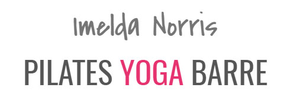

{kind=link}
Pilates For Life
Pilates is a method of body conditioning that will profoundly change the shape of your body. Building upon deep abdominal and back strength, Pilates safely and effectively delivers optimal strength, flexibility, endurance and posture without adding bulk or stress to the joints. Pilates focuses on restoring the natural curves to the spine while rebalancing the muscles around the joints.
How It Works
Pull out your gym mat and get ready to do a series of movements that will stabilize and strengthen your core. The exercises are usually done in a specific order, one right after another. The movements have names, like The 100, Criss-Cross, Mermaid and Swan.
The moves may look simple, but they take a lot of precision and control. It is not like doing a bunch of crunches; there is a strong emphasis on technique. You can do Pilates on an exercise mat, either in a class or at home, using a DVD. Or you can go to a gym or studio that has special equipment, a class, or a trainer who can supervise you.
Pilates classes typically take 45 minutes to an hour, but you can do fewer moves in less time. You will get stronger, more sculpted muscles and gain flexibility. You may also have better posture and a better sense of well-being.
Plan on doing this workout a few days a week, in addition to cardio, since Pilates is not aerobic.
Intensity Level
Medium It is demanding, but it is not the kind of workout that always works up a sweat. It is all about concentration and breathing. But you’ll definitely feel it in your muscles during each exercise.
Areas It Targets
Pilates main focus is on core however, you can expect to see strength gains in your arms and legs. Positions and movements used to activate core rely on extremities to control &/or apply loads to the core and likewise will benefit from Pilates.
what you can expect from this workout
- Flexibility: Yes. The exercises in a Pilates workout will boost your flexibility and joint mobility.
- Aerobic: No. This is not a cardio workout.
- Strength: Yes. This workout will make your muscles stronger. You’ll use your own body weight instead of weights.
- Sport: No.
- Low-Impact: Yes. You will engage your muscles in a strong but gentle way.
- Good for beginners? Yes. You can start with basic exercises then try advanced moves as you get better. If you are starting out, opt for a class or private lessons so an instructor can keep an eye on your form to help prevent an injury.
- Outdoors: No. Expect to go to the gym or be in a room with a TV for this workout.
- At home: Yes. Pull out your mat and press play on your smart phone for a convenient at-home workout.
- Equipment required? Yes, you’ll need a mat. Some gyms have special machines for Pilates, called a Reformer. You can get a modified version for your home, but you probably don’t need it.
Pilates Classes Available at the studio
Pilates is a physical fitness system developed in the early 20th century by Joseph Pilates. This unique system was designed to strengthen, lengthen and tone your body. Focusing on core muscles, breathing and controlled movement, Pilates will improve posture, proprioception and core strength.
In 10 sessions you will feel the difference, in 20 you will see the difference and in 30 you will have a new body - Joseph Pilates
Cardio Pilates
The ultimate body workout. Our highly trained instructors have designed a high-intensity cardio workout to target every inch of your body. Drawing from Pilates, Yoga and Barre, this class caters for all. With the use of props, weights and our ballet barre, your body will move every which way to a lively beat. This class will have a cardio aspect so be prepared to work hard.
Restorative Pilates
Using the best of Pilates/Yoga mobilisations, myofascial release techniques and PNF stretching. These relaxing sessions help you build flexibility and strength at the same time as releasing joint tightness and muscle pain. Whatever your sport or work come to class and feel restored ready for the next challenge.
Revive and Restore Pilates
If you are feeling mentally and physically whooped after a long week, this class is respectful of the body and it is need for rest. Build awareness of the body from the inside out and reconnect you to your core strength.
Generously stretching and strengthening the body in areas where bad habits and stress create imbalances and tension. The stretches and light toning exercises get you moving and help improve circulation, without being overtaxing. If you feel like you don not want to stay still but lack the energy or desire to push your body through a more brutal high intensity workout, give this calming yet efficient class a shot, we bet you will feel refreshed and relaxed by the time you are done.
Slow Flow Pilates
Whether you are a newcomer to Pilates, or just looking to fine tune your technique at a reduced pace, this slow flow class is for you. It focuses on re-energising your body through gentle stretching to help awaken tight muscles.
Strengthening exercises will target all muscle groups, allowing you to maximise your body awareness, coordination and balance. Use of props and modifications means all levels are catered for, building confidence in your Pilates and yourself.